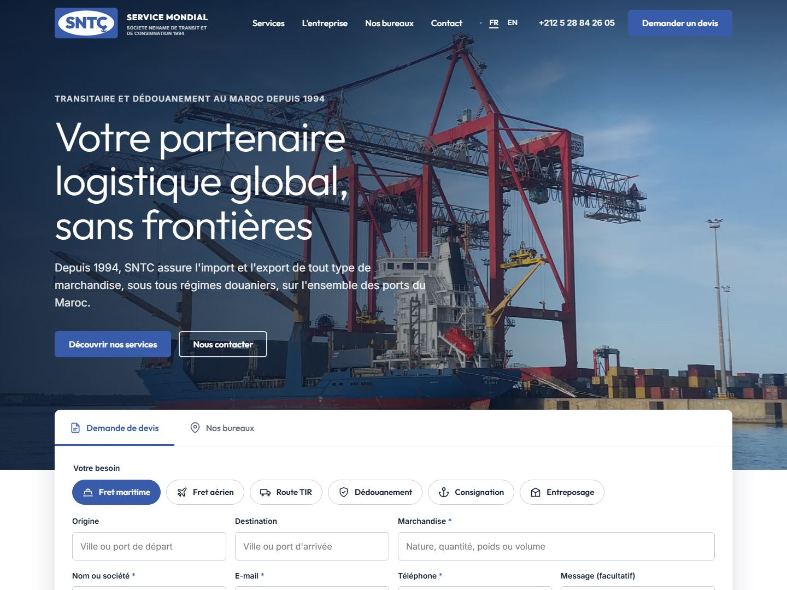
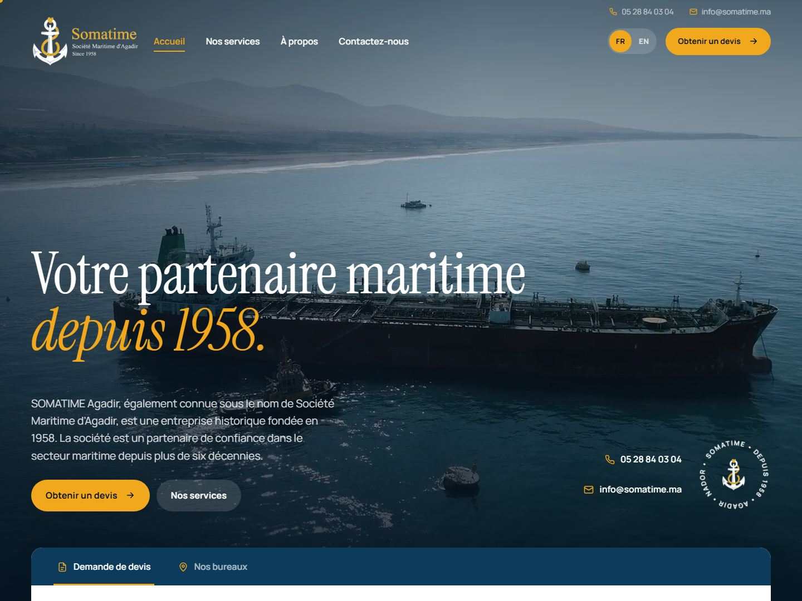
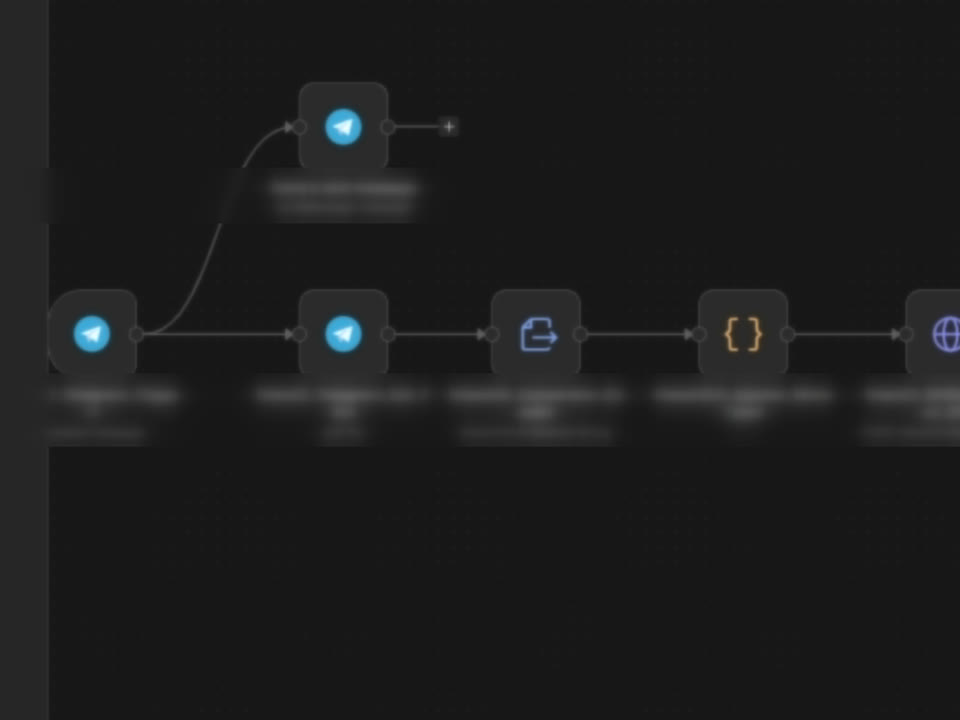
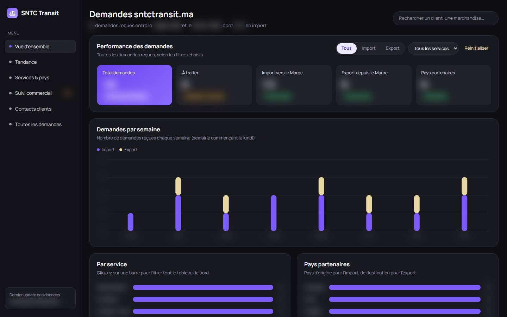
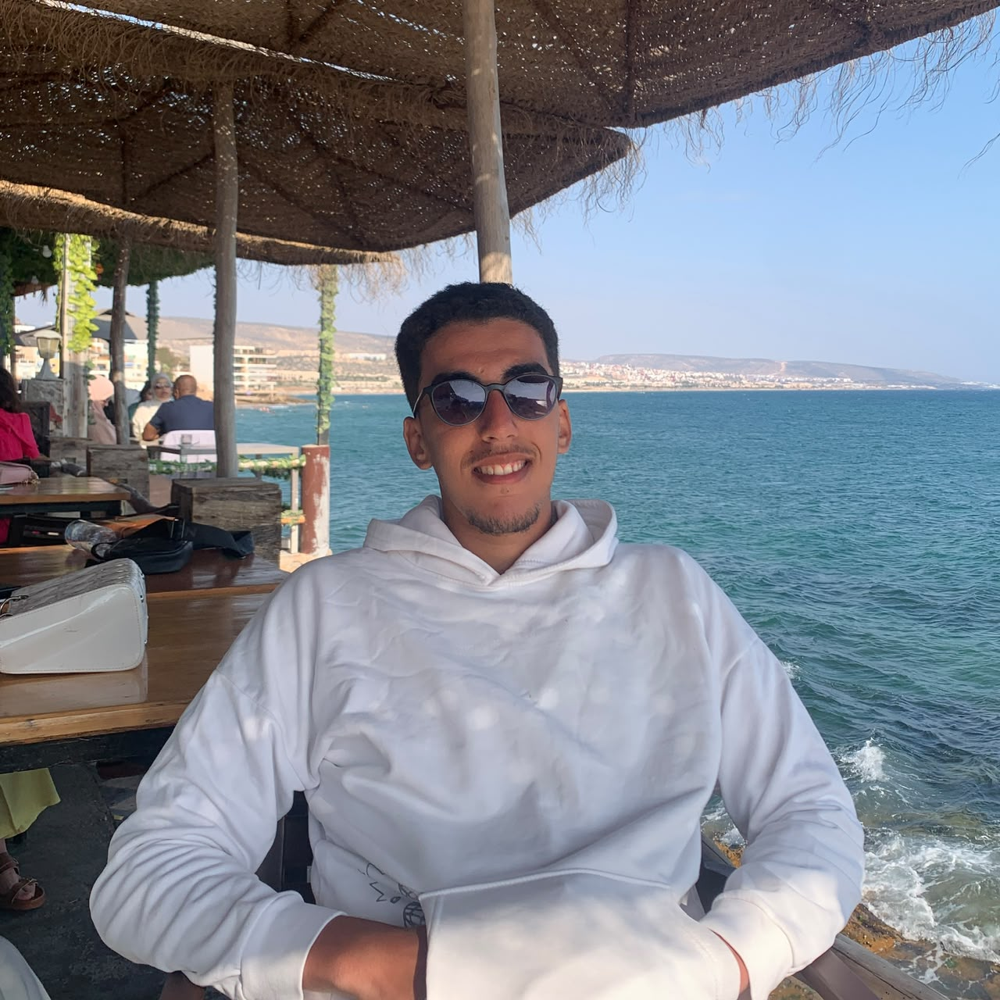

Management · Digital · AI
My approach: organise and track work well, relying on digital tools and AI to save time and avoid mistakes. My projects show it: automations, tracking dashboards and websites.
See the projectsAbout
Second-year student in a two-year management degree (DUT Techniques de Management) at the École Supérieure de Technologie de Guelmim. My profile: a future manager who relies on digital tools and AI to organise, track and improve the work of teams.
My background-
Management and organisation
Management degree (DUT): organisation, activity tracking and reporting. Internship at SNTC, a freight forwarder in Agadir.
-
Steering and tracking
Dashboards to track requests and their status. Stock tracking and reports in Excel at Danialand.
-
Automation and AI
Automations with n8n and AI tools to remove repetitive tasks, such as checking container numbers.
-
Digital and websites
The SNTC and Somatime websites, designed and developed by me to present the companies and receive requests.
Skills
Management skills, strengthened by digital tools and AI. I adapt quickly to new tools, including the latest ones.
Key strengths
- AIArtificial intelligence
- ⟳AI automation
- ›_Prompt engineering
- SQLSQL
- </>Vibe coding
- AaDesign
Software
- WWord
- XExcel
- PPowerPoint
- PsPhotoshop
- AiIllustrator
- n8nn8n
- GGoogle Workspace
Languages
- ArabicNative
- TamazightNative
- FrenchFluent
- EnglishAdvanced
- Soft skills
- Teamwork · Digital tools · Writing and reporting · Fast learner
- Interests
- Sport · Scouting · Tech and AI
Projects
Concrete projects where digital tools and AI serve management: better tracking, time saved, fewer mistakes.
-

-

Website · Somatime
Somatime website
The website of Société Maritime d'Agadir, rebuilt from scratch and developed by me.
-

Internal tool · SNTC
Container number check
An n8n automation that checks container numbers, with no manual checking.
-

Dashboards · SNTC
Request tracking
Dashboards to steer incoming requests, from arrival to processing.
Background
Experience
1 June – 15 July 2026 · Agadir
Intern, SNTC
Freight forwarding and customs clearance.
2025 · 2 months
Assistant storekeeper, Danialand
Tracked goods in and out in Excel, handled equipment requests, monitored stock and wrote reports for the technical teams.
Education
Second year
DUT Techniques de Management
Two-year management degree, École Supérieure de Technologie de Guelmim, Ibn Zohr University.
Baccalaureate
Economics
Lycée Al Massira Al Khadra, Massa.
Contact

Looking for a management profile at ease with digital tools and AI? The easiest way is to write to me on LinkedIn.
My LinkedIn profileAvailable for an internship or a job